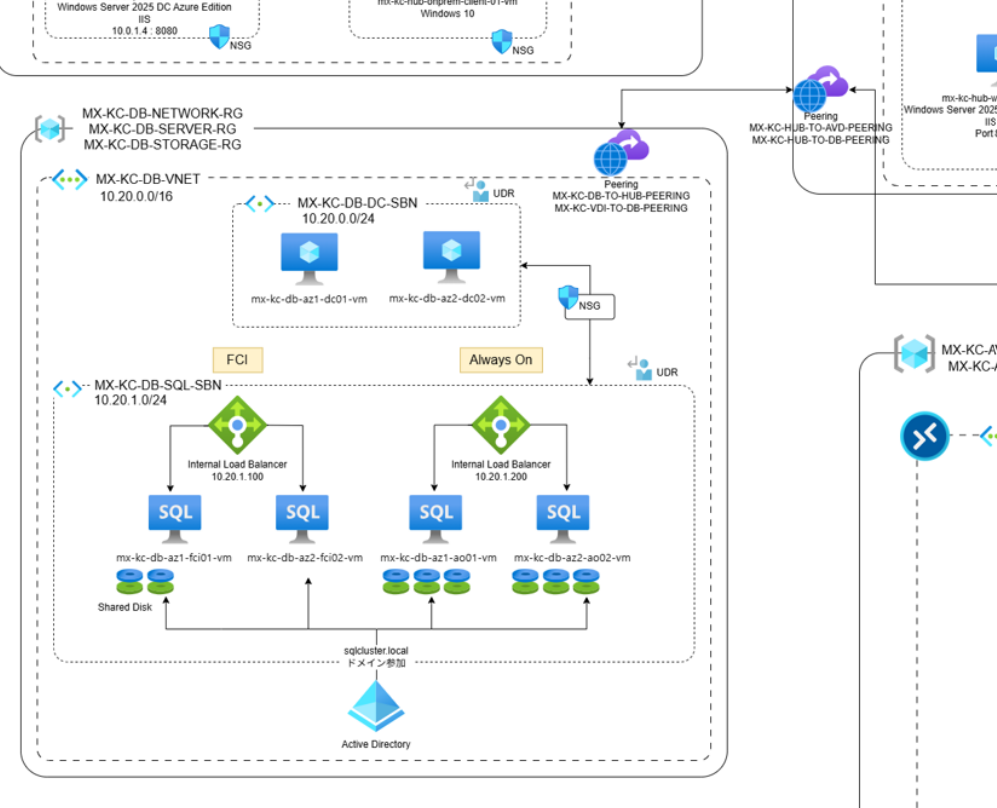

セキュリティHub-Spokeベースの二重SQL高可用性アーキテクチャ構築
2025年 10月 ~ 12月
Azureの可用性ゾーン、FCI、Always Onを活用し、UDRとAzure Firewallで制御されたセキュアな高可用性SQLインフラを構築。
{kind=link}
使用技術
プロジェクト目標
3ティアアプリケーション(Sub 2)とAVD(Sub 4)環境をサポートするため、Azureのマルチサブスクリプション(Hub-Spoke)環境を構築。セキュリティ(Azure Firewall)を中央集権化し、かつゾーン障害にも耐えうる二重のSQL高可用性(FCI, AO)基盤を確立することを目標としました。
主な役割と解決プロセス
1. Hub-Spoke ネットワーク及び UDR/Firewall の設計
Azure Firewallを中心とするHub-Spokeトポロジを設計。全Spoke VNet (DB, VDI, On-Prem) のトラフィックが必ずHub Firewallを経由するようUDR(ユーザー定義ルート)を構成しました。特にDB VNet内部のクラスタ通信（クォーラム、ハートビート）がUDRによって遮断される問題を「VNetLocal」ルート追加で解決し、セキュアな経路を確立しました。
2. SQL Server 高可用性(HA)の二重実装 (FCI & Always On)
zrs.ps1スクリプトとalways_on_fci_.mdガイドに基づき、2つの異なるHAソリューションを同一VNet内に構築。FCI(Failover Cluster Instance)用にはZRS共有ディスク（ゾーン障害対応）を、Always On(AG)用にはLRSローカルディスク（SQLレベルでのデータ複製）を使用し、可用性ゾーン(Zone 1, Zone 2)を跨いだデプロイを実装しました。
3. クラスタ内部通信と認証のトラブルシューティング
UDRが原因で発生したDISCONNECTED (5022ポート)及びnot part of quorum (クォーラム)エラーをデバッグ。Windows内部ファイアウォールとSQLエンドポイント(Hadr_endpoint)の状態を検証し、問題を特定しました。また、AOノード間でLogin failed (18456)エラーが発生した際、両ノードのSQLログインSIDが不一致であることを突き止め、SIDを強制的に同期させることで問題を解決しました。
4. 3ティア連携テスト
IISとASP.NETでテストWebページ(dbtest.aspx)を作成。Web VM(Sub 2)からDBリスナー(Sub 3)への接続テストを実施し、FCI(10.20.1.100)とAO(10.20.1.200)両方のHA環境でSQL認証(web_app_user)によるDB接続が成功することを検証しました。